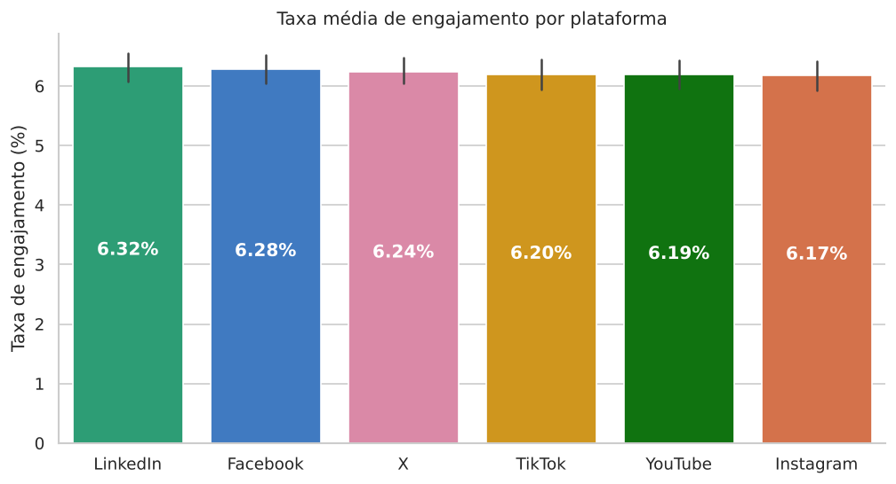
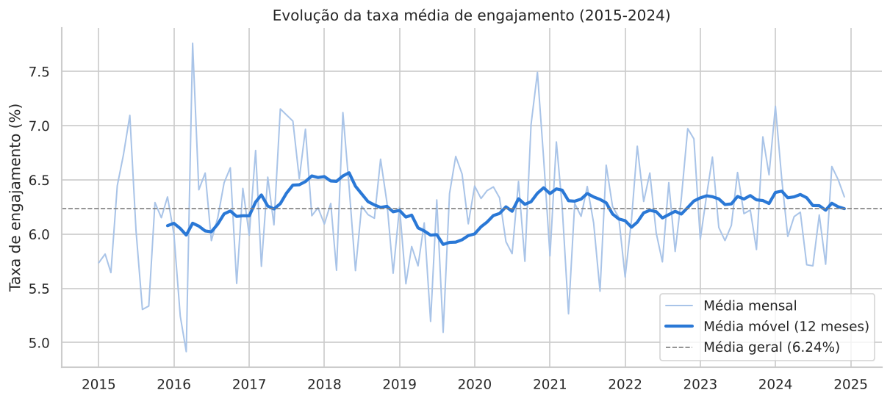
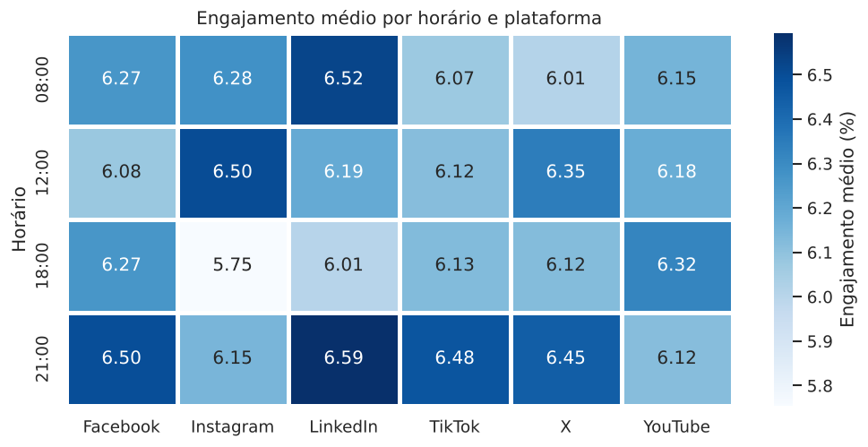
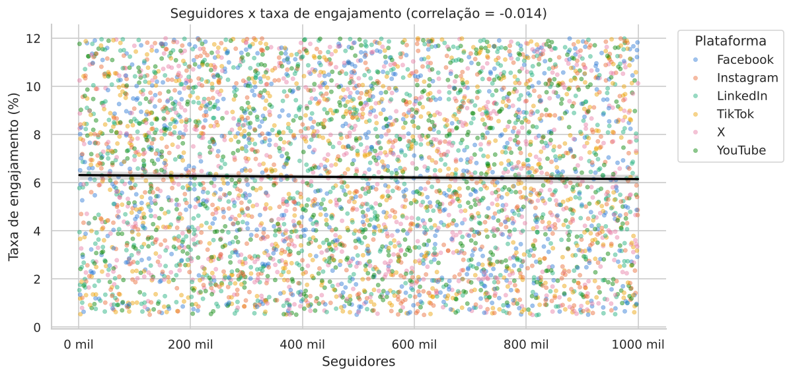
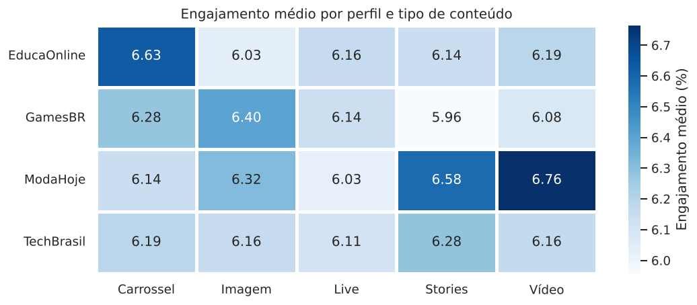

Projeto G1 - Análise e Visualização de Dados com Python - Tema 20
Hoje as redes sociais são um dos principais jeitos de marcas e criadores de conteúdo falarem com o público. Pra saber onde, o que e quando publicar, não adianta olhar só o número de seguidores: é preciso ver curtidas, comentários, compartilhamentos, visualizações, alcance e taxa de engajamento.
Neste projeto eu tratei e analisei uma base simulada com 4.440 publicações de 2015 a 2024, de quatro perfis (EducaOnline, GamesBR, ModaHoje e TechBrasil) em seis plataformas (Facebook, Instagram, LinkedIn, TikTok, X e YouTube). A análise está no notebook e os dados podem ser explorados no dashboard em Streamlit.
| KPI | Valor |
|---|---|
| Total de seguidores | 2,22 bilhões (soma dos seguidores de cada publicação) |
| Taxa média de engajamento | 6,24% |
| Plataforma mais engajada | LinkedIn (6,32%) |
| Conteúdo com maior alcance | Live (1,28 milhão de pessoas em média) |
| Total de visualizações | 4,47 bilhões |
| Melhor horário de postagem | 21:00 (6,38%) |
O LinkedIn tem o maior engajamento médio e o Instagram o menor, mas a diferença é de só 0,15 ponto percentual e os intervalos de confiança se sobrepõem.

A média de cada ano fica entre 5,99% e 6,52%, sem tendência de alta ou de queda.

No geral, 21h é o horário com mais engajamento, mas cada rede tem o seu. No Instagram, por exemplo, o melhor é meio-dia.

A correlação entre seguidores e taxa de engajamento é de -0,014, praticamente zero. Entre frequência de postagem e alcance também (-0,019).

Como a base não tem coluna de campanha, considerei cada combinação de perfil e formato como uma campanha. A melhor foi ModaHoje + Vídeo (6,76%), depois EducaOnline + Carrossel e ModaHoje + Stories.

Obs.: a base é simulada com valores aleatórios, por isso as diferenças são pequenas.
O dashboard tem filtros por ano, mês, plataforma, categoria, tipo de conteúdo e perfil, e é dividido em 4 páginas:
Python, Pandas, NumPy, Matplotlib, Seaborn, Plotly, Streamlit, SQLAlchemy, SQLite, GitHub, GitHub Pages e Streamlit Community Cloud.
O engajamento ficou estável nos dez anos e muito parecido entre plataformas, formatos, horários e perfis. Seguidores, frequência de postagem e as outras métricas não têm relação com a taxa de engajamento. Com dados reais, o ideal seria testar as combinações que foram melhor, escolher o horário de cada rede separadamente e acompanhar engajamento e alcance, não só seguidores.